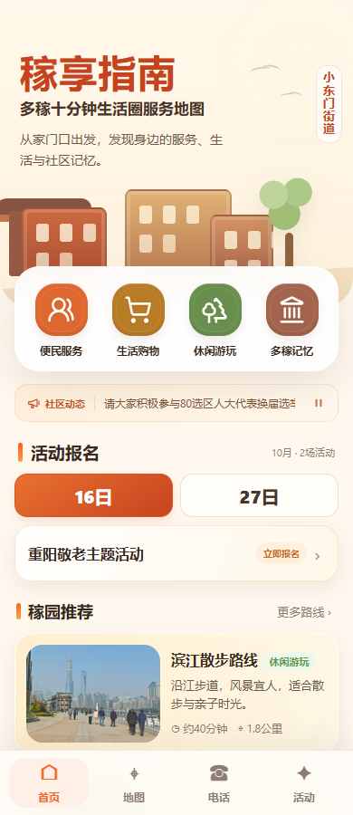
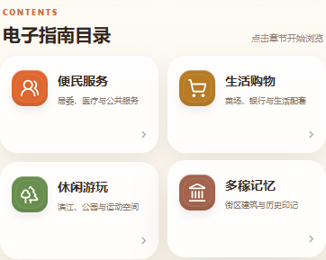
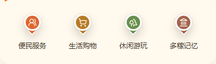
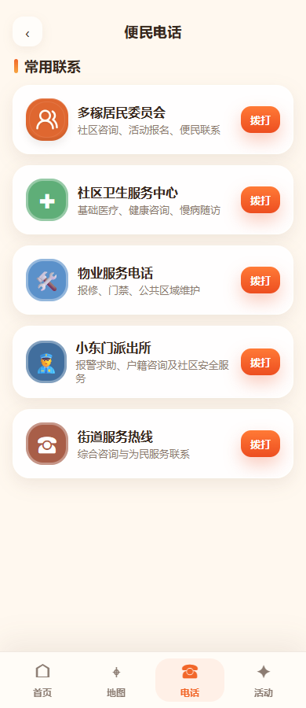

已撤回：四类入口图标统一更新
当前本地网页已恢复原来的图标，以下截图与检查结果仅为撤回前的历史记录。查看恢复后的预览与记录。
撤回前的方案截图（非当前网页）


便民服务：邻里人物 · 暖橙
生活购物：购物车 · 麦金
休闲游玩：树木 · 草绿
多稼记忆：历史建筑 · 砖红
统一使用本地矢量素材，小尺寸与放大时保持清晰，不需要下载额外的在线图标库。
这两个链接打开实际本地网页，可检查分类进入、搜索、地图点位介绍等交互。
逐项覆盖检查
| 位置 | 处理范围 | 结果 |
|---|---|---|
| 首页快捷入口 | 四个入口的图标、配色、轻浮雕与按下反馈 | 4/4 通过 |
| 点位列表、全部点位、搜索结果 | 便民 15、购物 21、休闲 7、记忆 3，共 46 个点位 | 46/46 通过 |
| 普通地图点位 | 检查全部 57 个生成标记；四类采用新图标，商务保持原样 | 通过 |
| 纸质指南电子版目录 | 四个章节入口使用相同素材与配色 | 4/4 通过 |
| 电话页 | “多稼居民委员会”的同款人物图标同步更新 | 通过 |
| 分类跳转、搜索、点位详情、导航链接 | 两个网页入口分别回归检查 | 通过 |
| 小屏与桌面 | 320、375、430、1280 宽度检查 | 无横向溢出 |
| 旧图标与素材加载 | 当前页面源文件及使用图标的位置检查 | 无旧图标残留；无素材加载失败 |
地图上方分类筛选原本仅显示文字，保持原样。地图图标检查使用实际生成的标记元素，本次离线回归没有加载外部地图底图。
其他页面中的效果





四类列表截图


未改动的内容
图标来自本机 Lucide，已随素材保留授权说明。统一渲染入口与共享样式便于后续维护，避免只改首页而遗漏列表或地图。